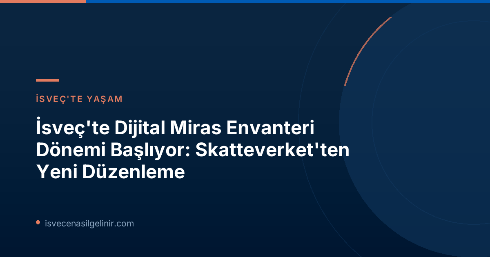

Dijitalleşme Sürecinin Detayları: Yeni Yasa ve Skatteverket'in Rolü
İsveç Vergi Dairesi (Skatteverket), ülkedeki miras envanteri süreçlerini modernleştirmek ve dijitalleştirmek amacıyla önemli bir adım attı. 1 Temmuz 2026 tarihinde yürürlüğe giren yeni yasa, miras envanterlerinin artık tamamen dijital ortamda hazırlanabilmesinin önünü açıyor. Skatteverket, bu köklü değişimin arkasındaki itici güçlerden biri olarak, en erken 2027 yılında faaliyete geçmesi beklenen kapsamlı bir dijital çözüm üzerinde yoğun bir şekilde çalışıyor.
Neden Dijital Bir Çözüme İhtiyaç Duyuldu?
Her yıl yaklaşık 90.000 miras envanteri işleminin yapıldığı İsveç'te, bugüne kadar tüm süreçler kağıt tabanlı ve manuel olarak yürütülüyordu. Bu durum, hem vatandaşlar hem de devlet kurumları için zaman ve iş gücü kaybına neden oluyordu. Skatteverket Birim Müdürü Anders Koskinen, konuyla ilgili yaptığı açıklamada, "Miras envanteri, hayatınızda belki bir kez yaptığınız ve genellikle yas tuttuğunuz bir süreçtir. Bu hassas dönemde, işlemleri mümkün olduğunca kolaylaştırmak istiyoruz ve dijital bir hizmet bunu sağlayacak" ifadelerini kullandı. Kağıt üzerinde miras envanteri hazırlamanın yasal bir zorunluluk olması nedeniyle Skatteverket, 2023 yılında bu alanda bir yasa değişikliği teklifini hükümete sunmuştu. Yeni dijital çözüm sayesinde, işlem sürelerinin önemli ölçüde kısalması ve sıkça yaşanan hataların önüne geçilmesi hedefleniyor.
Miras Envanteri (Bouppteckning) Nedir ve Neden Önemlidir?
Miras Envanteri (Bouppteckning) Nedir?
Bouppteckning, vefat eden bir kişinin tüm varlıkları (gayrimenkul, banka hesapları, araçlar, hisse senetleri vb.) ve borçları (krediler, faturalar, vergiler vb.) ile mirasçıların listesini içeren resmi, yazılı bir belgedir. Bu belge, mirasın yasal olarak paylaşılması, vergi beyanları ve diğer hukuki süreçler için temel teşkil eder. İsveç mevzuatına göre bouppteckning, ölümden sonraki dört ay içinde Skatteverket'e sunulması gereken yasal bir zorunluluktur.
Dijitalleşme Ne Zaman Hayata Geçecek? Geçiş Sürecinde Bilmeniz Gerekenler
Yeni yasa 1 Temmuz 2026 tarihinde yürürlüğe girmiş olsa da, dijital miras envanteri hizmetinin tam olarak faaliyete geçmesi için Skatteverket'in geliştirme çalışmaları devam ediyor ve bu çözümün en erken 2027 yılında hazır olması bekleniyor. Bu geçiş sürecinde, Skatteverket Birim Müdürü Anders Koskinen önemli bir uyarıda bulunuyor: "Dijital çözüm tamamen devreye girene kadar, miras envanteri ile ilgili tüm belgeler hala orijinal, imzalı ve fiziksel posta yoluyla gönderilmelidir."
| Konu | Detay |
|---|---|
| Yeni Yasanın Yürürlüğe Giriş Tarihi | 1 Temmuz 2026 |
| Dijital Çözümün Beklenen Faaliyete Başlama Tarihi | En Erken 2027 |
| İsveç'te Yıllık Ortalama Miras Envanteri Sayısı | Yaklaşık 90.000 |
| Geçiş Dönemindeki Gönderme Yöntemi | Orijinal belge ve fiziksel posta |
Bu süreçte doğru adımları atmak ve yanlışları önlemek adına sverigemedborgarskapsprov.com adresinden güncel vatandaşlık ve yasal bilgilerle ilgili detaylı rehberlere ulaşabilirsiniz.
Skatteverket'ten Önemli Uyarılar ve Kontrol Listesi
Dijitalleşme süreci öncesinde ve sonrasında miras envanteri hazırlarken karşılaşılabilecek olası hataları ve gecikmeleri önlemek adına Skatteverket, birtakım kritik noktalara dikkat çekiyor. Anders Koskinen, özellikle belgelerin gönderilmeden önce detaylıca kontrol edilmesini tavsiye ediyor. İşte Skatteverket tarafından belirlenen önemli kontrol listesi:
Miras Envanteri Gönderimi Öncesi Kontrol Listesi
Skatteverket, olası ek belge taleplerini ve gecikmeleri önlemek adına aşağıdaki maddelerin dikkatlice kontrol edilmesini önermektedir:
- Tüm mirasçılar (hem doğrudan mirasçı hem de ardıl mirasçı) için gerekli tüm bilgilerin eksiksiz olduğundan emin olun.
- Ölen kişinin varlıklarının ve borçlarının (örneğin gayrimenkul bilgileri dahil) tam ve doğru bir şekilde değerlendiğini teyit edin.
- Hayatta kalan eşin/partnerin varlıklarının ve borçlarının (örneğin gayrimenkul bilgileri dahil) tam ve doğru bir şekilde değerlendiğini kontrol edin.
- Miras taksimi törenine katılamayan bir kişi varsa, davet belgesinin (kallelsebevis) eklendiğinden emin olun.
- Varsa, vasiyetnamenin noter veya avukat tasdikli bir kopyasını (bestyrkt kopia) ekleyin.
- Miras envanterinin orijinal formda, usulüne uygun şekilde imzalanmış ve fiziksel posta yoluyla Skatteverket'e gönderildiğinden emin olun.
Daha detaylı bilgi ve güncel formlar için Skatteverket'in resmi web sitesini kontrol etmeyi unutmayın.
Sıkça Sorulan Sorular (SSS)
Miras envanteri ne kadar sürede yapılmalıdır?
İsveç yasalarına göre miras envanteri (bouppteckning), ölümden sonraki dört ay içinde Skatteverket'e sunulmalıdır.
Hangi belgeler miras envanterine eklenmelidir?
Envantere, tüm mirasçı ve ölen kişinin finansal bilgileri eksiksiz olarak eklenmelidir. Ayrıca, gerektiğinde davet belgesi (kallelsebevis) ve onaylı vasiyetname kopyası gibi ek belgeler de sunulmalıdır.
Dijital çözüme geçene kadar miras envanterini nasıl göndermeliyim?
Dijital sistem tam faaliyete geçinceye kadar, miras envanteri orijinal imzalı haliyle fiziksel posta yoluyla Skatteverket'e gönderilmelidir. Elektronik olarak gönderilen belgeler şu an için kabul edilmemektedir.
Referanslar
İsveç'teki Yasal Süreçlerde Uzman Desteği Alın!
İsveç'teki miras, vatandaşlık veya diğer resmi işlemlerle ilgili daha fazla bilgiye mi ihtiyacınız var? Alanında uzman danışmanlarımızla iletişime geçin ve sürecinizi kolayca yönetin.